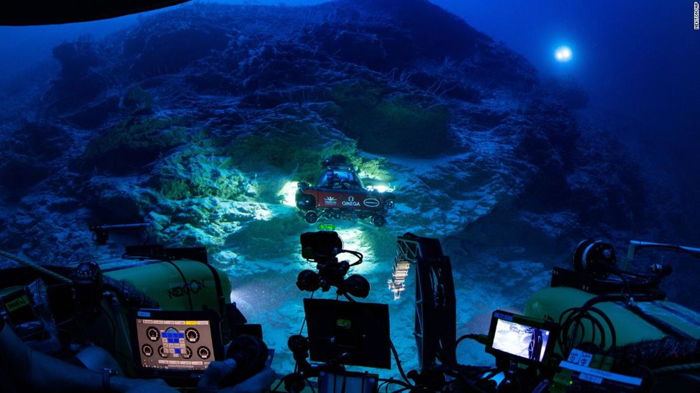

Una misión submarina ha revelado un nuevo tipo de ecosistema a 500 metros bajo las Maldivas
La Misión Nekton Maldives es el primer estudio en mapear sistemáticamente las aguas profundas de las Maldivas, una cadena de 26 anillos coralinos, llamados atolones, en el suroeste de Sri Lanka e India. El equipo de investigación ha encontrado en Satho Rahaa, una montaña de aguas profundas, un nuevo ecosistema muy próspero.